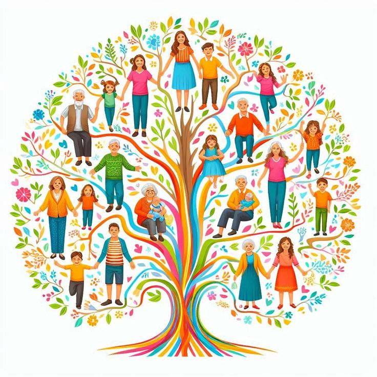

Herencia Genetica
La herencia genética es el proceso mediante el cual los padres transmiten sus genes a sus hijos. Estos genes contienen la información necesaria para determinar cómo será cada organismo, desde su aspecto físico hasta algunas funciones internas del cuerpo. La información genética está contenida en el ADN (ácido desoxirribonucleico), que se organiza en estructuras llamadas cromosomas, localizadas en el núcleo de las células.
Cada ser humano recibe 23 cromosomas del padre y 23 de la madre, sumando un total de 46. En estos cromosomas se encuentran miles de genes que influyen en los rasgos que heredamos. Por eso, cada persona posee una combinación única de genes que provienen de ambos progenitores, lo cual explica las similitudes familiares, pero también las diferencias individuales.
El estudio de la herencia comenzó con los experimentos del monje Gregor Mendel, quien demostró que las características se transmiten siguiendo ciertas leyes. Según sus descubrimientos, existen genes dominantes y genes recesivos. Los dominantes son los que se manifiestan con más fuerza en el individuo, mientras que los recesivos solo se expresan si están presentes en ambos genes heredados.
Por ejemplo, si un gen dominante determina el color de ojos marrones y un gen recesivo el color azul, una persona que tenga ambos genes tendrá los ojos marrones, ya que el gen dominante “oculta” al recesivo. Solo quien herede dos genes recesivos (uno del padre y otro de la madre) tendrá ojos azules.
Además de los rasgos visibles, la herencia también influye en la transmisión de enfermedades genéticas. Algunas patologías, como la hemofilia, la fibrosis quística o la anemia falciforme, pueden transmitirse de generación en generación debido a alteraciones o mutaciones en ciertos genes. Comprender cómo se heredan estos genes ha permitido grandes avances en la medicina, como el diagnóstico genético y los tratamientos preventivos

Caracteristicas Geneticas
Las características genéticas son los rasgos o cualidades que definen a cada ser vivo y que se transmiten de padres a hijos a través de los genes. Estas características pueden observarse en el exterior del cuerpo, como el color de los ojos, la forma del cabello o la estatura, pero también existen muchas que no se pueden ver a simple vista, como el tipo de sangre, el metabolismo o la predisposición a desarrollar ciertas enfermedades.
Cada una de estas características está determinada por uno o varios genes, los cuales contienen la información específica que indica cómo deben formarse las estructuras del cuerpo o cómo deben funcionar las células. Por ejemplo, un gen puede contener la información necesaria para producir una proteína que influye en el color de la piel o en la forma de los huesos.
Las características físicas son las más fáciles de identificar. Entre ellas se encuentran la forma del rostro, el color del cabello, la textura del pelo (liso, ondulado o rizado), el color de los ojos, el tono de la piel y la estatura. Estas características dependen de la combinación de genes heredados de ambos padres, por eso a veces una persona puede parecerse más a su madre o a su padre, o incluso a sus abuelos.
También existen las características fisiológicas, que están relacionadas con el funcionamiento interno del organismo. Estas incluyen el grupo sanguíneo, la capacidad para digerir ciertos alimentos, la velocidad del metabolismo, la respuesta inmunológica o la producción de determinadas hormonas. Todas estas funciones están controladas, en gran parte, por la información genética que cada persona posee.
Por otro lado, las características conductuales o de comportamiento pueden tener una base genética, aunque también dependen mucho del entorno. Estudios científicos han demostrado que algunos aspectos como la memoria, la inteligencia o ciertas habilidades pueden estar influenciados por los genes, pero el ambiente, la educación y las experiencias de vida son factores fundamentales que moldean el comportamiento humano.
Es importante destacar que las características genéticas no actúan de manera aislada. Existen interacciones entre los genes y el ambiente que pueden modificar la forma en que se expresan los rasgos. Por ejemplo, una persona puede tener genes que favorezcan una gran capacidad atlética, pero si no realiza actividad física o no mantiene una buena alimentación, esos genes no se manifestarán por completo. A este fenómeno se le conoce como expresión genética influenciada por el ambiente.
Gracias a los avances en la genética moderna, los científicos pueden identificar cuáles genes están involucrados en ciertas características y cómo se heredan. Esto ha permitido comprender mejor la diversidad humana y también desarrollar herramientas para detectar y prevenir enfermedades hereditarias.
Las características genéticas son el conjunto de rasgos que hacen que cada ser humano sea único. Se transmiten a través de los genes, se combinan de distintas maneras en cada generación y pueden ser modificadas por el ambiente. Esta mezcla de herencia y entorno es la que da origen a la enorme diversidad biológica que existe en el mundo, demostrando que cada persona es el resultado de una historia genética única e irrepetible.